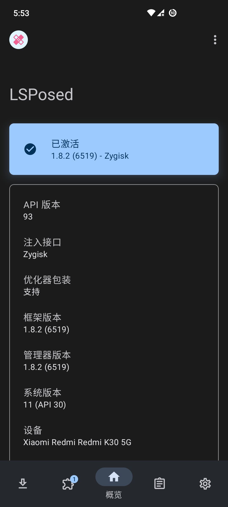
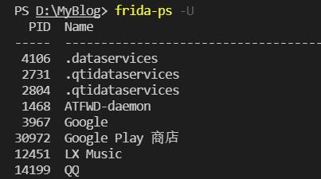

Android逆向环境配置
手机Root权限获取
- 解锁BootLoader，此处推荐小米、一加等比较容易解锁的手机，小米需要等14天才能解锁，一加到手就能解锁，且这两个牌子解锁后仍然保修。
- 根据手机型号下载TWRP，使用fastboot刷入。
- 到 https://github.com/topjohnwu/Magisk 下载Magisk框架，修改后缀为.zip文件
- 进入Recovery，可以看到此时已经被替换为TWRP，刷入类原生ROM（比较知名的有PE、crdroid、Dotos等等，注意型号）或者AOSP，这样做是为了减少出厂系统的深度魔改造成一些难以解决的错误。
- 找到Magisk的zip文件，刷入Magisk框架，此时便获得了Root权限
更加详细的教程参见 https://www.bilibili.com/video/BV1BY4y1H7Mc
ro.debuggable属性修改
通过magisk修改（重启失效），连接电脑输入以下指令：
adb shell
su
magisk resetprop ro.debuggable 1
stop;start;
除此之外还可以使用MagiskHide Props Config模块，安装后在adb shell中输入props，按照提示将ro.debuggable改为1即可，该方法修改后即使手机重启也不会失效。
通过这样的配置之后Jadx，jeb等软件就可以动态调试手机上的软件了。
lsposed框架安装
Xposed框架在很早以前就已经停止更新，目前仍然维护的Xposed实现是lsposed框架，安装过程很简单，访问 https://github.com/LSPosed/LSPosed 下载zip包，在magisk管理器中安装即可（可以选择riru版或者zygisk版，建议安装zygisk版本，riru已经停更，预计不久riru版本的lsposed也会停更），需要注意的是zygisk版本的lsposed框架需要打开magisk的zygisk功能支持才能正常运行，注意在magisk设置中打开。
安装成功后显示如下： 
frida环境安装
这是我们分析Java层代码的主力军之一，配合Jadx等静态分析工具能够做到快速定位目标功能代码，安装和配置步骤如下：
- 首先在电脑上安装Python，推荐3.8.x版本，这是目前frida支持的最新版本，之后安装frida库和frida-tools库。命令如下：
pip install frida
pip install frida-tools
- 在已经安装magisk的手机上安装frida是很简单的一件事，访问 https://github.com/ViRb3/magisk-frida/releases 获取Magiskfrida模块，在Magisk管理器中安装即可。
测试是否安装成功只需首先将手机通过USB连接到电脑上，注意允许USB调试，之后在电脑上打开终端输入命令frida-ps -U，输出结果如下即为成功：

- 在安装frida成功的基础上，安装objection库，该库是一个基于frida的扩展，提供了无代码hook，内存漫游和主动调用等等功能，安装只需一行命令：
pip install objection
- 另外objection还有一些扩展插件可以按需安装： wallbreaker https://github.com/hluwa/Wallbreaker 能够快捷的列出内存中的对象的字段属性，方法等等。 Frida-Dexdump https://github.com/hluwa/FRIDA-DEXDump 抓取内存中的dex文件达到快速脱壳的功能。
apktool安装
利用apktool能够便捷解码Android apk压缩包，使我们能够修改dex，Manifest，xml等等文件并重打包。 官方网站说的很详细，安装地址如下： https://ibotpeaches.github.io/Apktool/install/
利用apktool重打包后需要配置密钥进行应用签名，签名步骤如下：
- 首先生成签名，进入JDK/bin, 输入命令
keytool -genkeypair -keystore 密钥库名 -alias 密钥别名 -validity 天数 -keyalg RSA - 进入目录Android SDK/build-tools/SDK版本/zipalign.exe，使用zipalign令APK包内未压缩的数据有序排列对齐，命令如下：
zipalign -p -f -v 4 infile.apk outfile.apk - 进入Android SDK/build-tools/SDK版本目录下，输入命令
apksigner sign --ks 密钥库名 --ks-key-alias 密钥别名 xxx.apk
进行应用签名后，该重打包后的应用便可以在手机上安装运行了，不过建议现在大部分apk都有各种的重打包检测（主要是用签名信息做文章），apk的持久化修改还是使用lsposed框架省事点。
其他工具安装
- platform-tools 主要是用到其中的adb调试工具，这个在谷歌官方网站就可以下载，地址如下： https://developer.android.com/studio/releases/platform-tools
- Jadx是用来分析Java代码最好的选择之一，安装也很简单，只需要在 https://github.com/skylot/jadx 下载即可，建议下载with-jre的版本。
- lsposed框架隐藏模块shamiko，这个怎么安装使用我没有深究，有兴趣的可以上酷安上搜索一下，另外这个东西是闭源的，安全性自己鉴别。
- IDA下载，这个没啥好说的，用来分析Native层代码，怎么下载，网上找找吧。
- Ghidra下载，免费开源的二进制分析器，功能也在不断完善，现在好像可以分析dex文件了，功能请自行测试。地址如下： https://github.com/NationalSecurityAgency/ghidra/releases